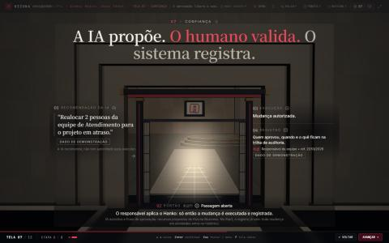
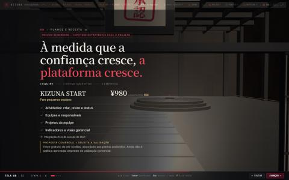
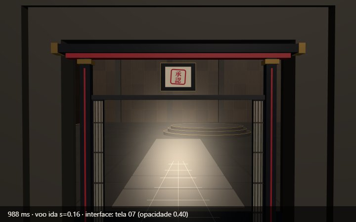
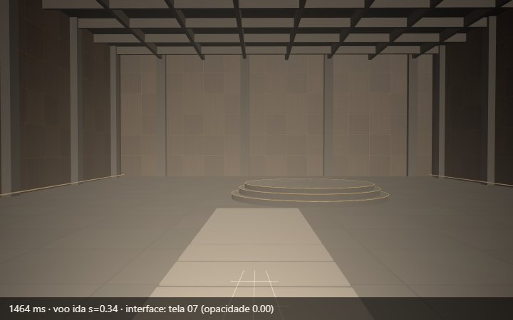
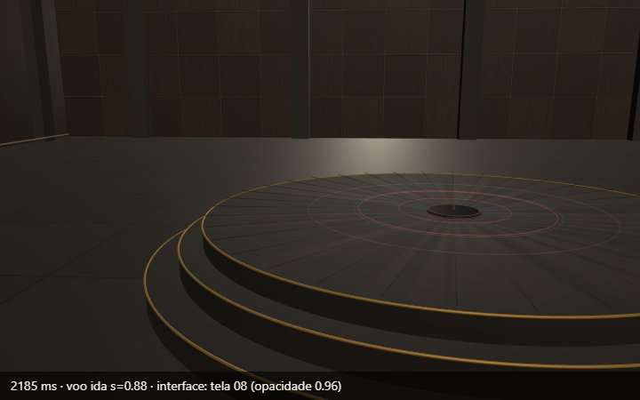
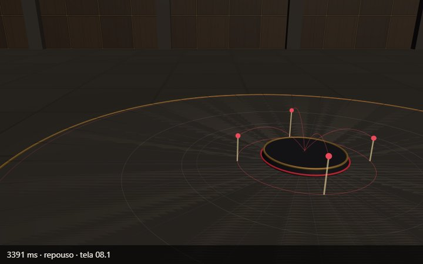

Etapa 11 • Fase 2 — piloto 07 → 08
Sistema compartilhado de transições (TransitionDirector + plans.ts) com âncora temporária e rebase, coexistência controlada dos ambientes, interpolação de câmera, luz e névoa, sincronização da interface 2D e política determinística de interrupção. Só a conexão 07 ↔ 08 usa o novo voo; as demais conexões ficaram como estavam.
Gravação • voo de ida 07 → 08 (quadros reais do canvas 3D, ~230 ms)
Gravação • retorno 08 → 07 (trajetória inversa)
A legenda de cada quadro mostra o tempo, o progresso do voo e qual interface está à mostra (com sua opacidade). A camada 2D não aparece nas imagens porque a captura é do canvas 3D.
Antes (Etapa 10) × depois
Antes — o texto da 08 aparecia sobre o portão; a interface da 07 sumia no clique; a estrutura já estava pronta ao chegar; o pico de velocidade era no limiar; voltar era um corte e o Hanko se repetia.




Depois — a interface da 07 sai antes do limiar; a 08 só entra dentro da sala; a câmera desacelera ao cruzar o portão; a estrutura cresce na chegada; a luz do portal cede à da estrutura sem escurecer a sala; a volta refaz a trajetória com o portal já aprovado.




Linha do tempo do voo de ida (3,0 s; volta 2,4 s)
| Progresso | Câmera | Interface | Objetos e luz |
|---|---|---|---|
| 0 – 0,28 | sai da pose da 07.2 e alinha-se ao eixo | a 07 esmaece até sumir | portão aberto e aprovado; sala acesa ao fundo |
| ≈ 0,36 | cruza o vão do portão, centrada, com desaceleração | — | névoa passa da origem ao destino (iguais neste par) |
| 0,70 | dentro da sala, a ~6 m do portão | a 08 entra (sem sobreposição) | — |
| 0,74 | aproximação do estrado | 08 chega à opacidade plena em 0,90 | a estrutura começa a crescer; a luz dela entra e a do portal cede |
| 1,00 | pose exata da 08.1 → rebase no mesmo quadro | — | portal oculto; sala na posição natural |
Testes obrigatórios (resultados medidos pela sonda ?kzdebug)
| # | Situação | Resultado |
|---|---|---|
| 1 | 07 → 08 normal | câmera contínua; rebase sem salto (posição relativa à sala −10,55 antes e depois); pose final (0,95, −0,12, 1,45); rotação final idêntica à chegada direta (5 casas) |
| 2 | 08 → 07 pela trajetória inversa | desfaz o rebase no mesmo quadro; portal aprovado o voo todo (selo, portão aberto, sem Hanko, sem trava); pose final exata da 07.2 |
| 3 | Avanço durante o voo (troca de cena 08.1 → 08.2) | o fim da trajetória acompanha a nova pose; chega à 08.2 com a estrutura no nível 2 |
| 4 | Retorno durante o voo (antes e depois da troca de interface) | inverte o sentido no ponto atual, sem salto; a interface volta para a 07 no mesmo ponto narrativo |
| 5 | Saltos de várias telas pelo menu (durante o voo e em repouso) | véu curto (≈0,55 s); destino exato no pico; nenhum portal, estrutura ou âncora residual |
| 6 | Troca de cena durante a transição | ver 3; também testado com PageDown (avança cena nesta apresentação) |
| 7 | Movimento reduzido | sem travelling: imagem da origem parada sob o véu, destino no pico; ida e volta ≈0,55 s; 07 chega aprovada |
| 8 | Repetição (07 → 08 → 07, 3 vezes) | estados finais idênticos nas três voltas; nenhum erro no console |
| 9 | Fullscreen | redimensionamento durante o voo testado (1440×900 → 1024×768): termina na pose correta. A entrada real em tela cheia exige gesto do usuário e não pôde ser automatizada — conferir manualmente (tecla F). |
| 10 | Hanko e portal após cada situação | chegando da 08: sempre aprovado; chegando pelo menu sem passar pela 08: sequência normal do Hanko |
Desempenho: chamadas de desenho por quadro — 07 em repouso 136, durante o voo 47–136, 08 em repouso 114–118 (sem aumento). FPS não mensurável no painel oculto.